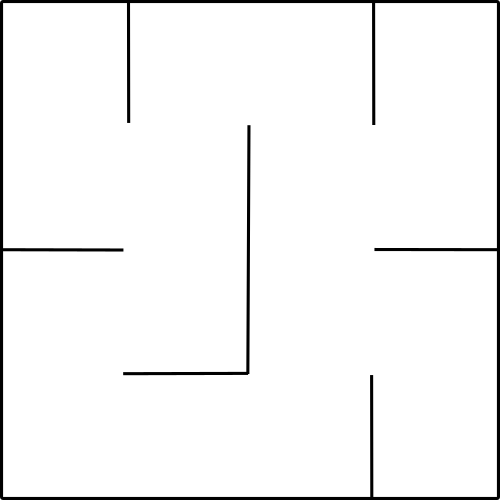
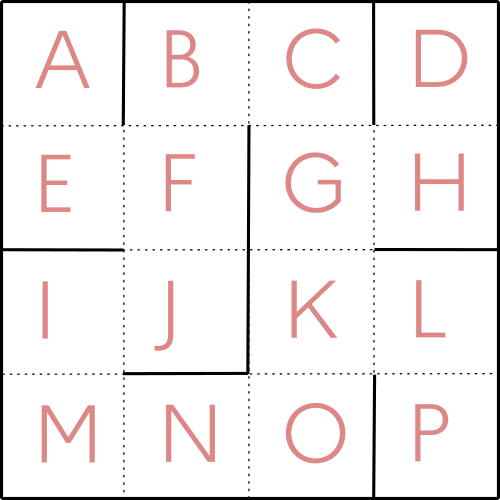
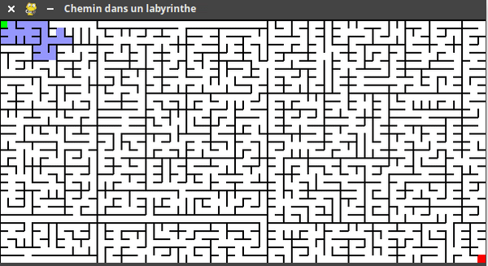

Exercices graphe#
Résolution d'un labyrinthe#
Présentation du problème#
Considérons le labyrinthe suivant :

Affectons une lettre à chaque case de ce labyrinthe.

Notre objectif est de trouver comment aller de A en P.
Modélisation par un graphe#
Dessiner le graphe (dont les noeuds seront des lettres) qui modélise ce labyrinthe.
Proposer deux «formes» possibles pour ce graphe.
Implémentation du graphe en Python#
En utilisant un dictionnaire, implémenter le graphe de ce labyrinthe.
Recherche du plus court chemin#
En utilisant la fonction recherche_chemin du cours, établir le plus court chemin pour aller de A vers P dans ce labyrinthe.
Conclusion#
Sur un labyrinthe un peu plus imposant, voici l'illustration de cette méthode (avec une autre implémentation ):

- le parcours en largeur part découvrir les cases dans toutes les directions.
- lorsque la case cherchée (ici, la rouge) est trouvée, on remonte à chaque case précédente grâce au dictionnaire
parent, et ainsi le chemin de sortie du labyrinthe est généré.
Exercice : Le loup, la chèvre,un chou et un passeur ....#
Sur la rive d'un fleuve se trouvent un loup, une chèvre, un chou et un passeur. Le problème consiste à tous les faire passer sur l'autre rive à l'aide d'une barque, menée par le passeur,en respectant les règles suivantes :
- la chèvre et le chou ne peuvent pas rester sur la même rive sans le passeur;
- la chèvre et le loup ne peuvent pas rester sur la même rive sans le passeur;
- le passeur ne peut mettre qu'un seul "passager" avec lui.
On décide de représenter le passeur par la lettre P,la chèvre par la lettre C, le loup par L et le chou par X.
1) Représenter ce problème à l'aide d'un graphe où les sommets sont tous les états possibles sur la rive de départ (par exemple,"PLCX" est un sommet représentant le fait que tous sont sur la rive de départ.)
2) Trouver une solution au problème en indiquant chacun des déplacements (si possible une solution avec le moins de déplacements possibles).